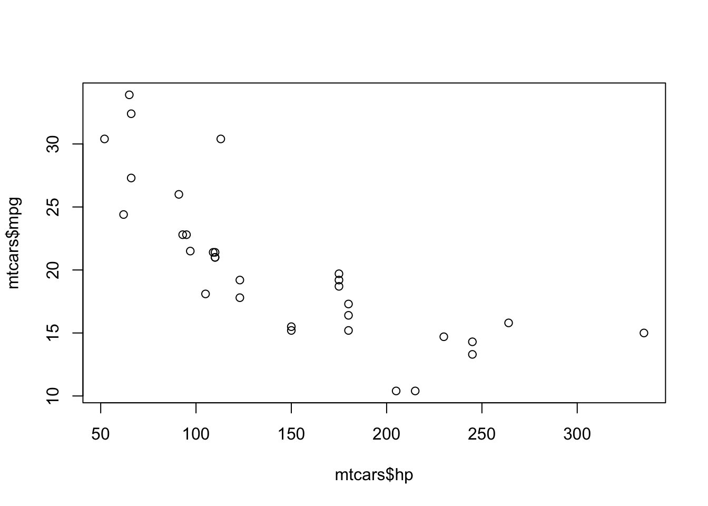

FANR 6750: Experimental Methods in Forestry and Natural Resources Research Fall 2026
What is Markdown?
Before we discuss what R Markdown is, we need to discuss what Markdown is. What is Markdown? Let’s start with what it’s not.
Many of you have probably created a report or a paper using a word processor like Microsoft Word or Google Docs. Word processors are referred to as “what you see is what you get” (wysiwyg) text editors. This means that when you highlight text and click the boldface icon in Word, the text appears bold on your screen. All sorts of other formatting options, including making headers, inserting figures, adding page numbers, etc., are possible by clicking on buttons. There is code behind the scenes that creates these changes but users don’t see the code, only the formatting output. This makes wysiwyg editors relatively easy to use for beginners. But for more advanced users, it can actually be problematic. Have you ever had Word act in ways that you don’t fully understand? Of course! We all have. Have you ever tried opening a .docx file using an older version of Word, only to find that it doesn’t look the way thought it would? Have you ever inserted a figure only to have it jump to another page or get ‘anchored’ to the bottom of a page? These are just a few of the problems that occur when your document has a bunch of hidden formatting code that you cannot see or understand.
Markdown is different. Markdown files are plain text files, meaning that they can be created and edited using text editors (like NotePad on Windows or TextEdit on Mac). The biggest difference between Markdown files and Word documents is that formatting Markdown documents occurs in the document itself rather than behind the scenes. So to make something boldface you have to tell Markdown to do that by putting two **asterisks** on either side of the word or phrase. Italics is done by putting one *asterisk* around the text. Hyperlinks are written like this: [Hyperlinks](https://en.wikipedia.org/wiki/Markdown). These are just a few of the many formatting options you can include in a Markdown document. We’ll learn about options like headers, lists, mathematical symbols and equations, and figures later in this tutorial and throughout the semester.
As you’re writing, the text won’t look bold or italic or whatever (this is not ‘what you see is what you get’, it’s ‘what you see is what you type’). The formatting only shows up when you render the Markdown file to create another type of document (pdf, html, even Word). The nice thing about Markdown is that because it uses standard ways to express specific formatting options, you can convert your documents into different output formats very easily.
What is R Markdown?
In this course, we will use a specific ‘flavor’ of Markdown called ‘R Markdown’. R Markdown gives us all of the formatting options available for Markdown plus the ability to embed, display, and run R code in our documents. By mixing R code with plain text, we can create dynamic reports that replicate the analytical processes, show the code underlying these processes, create the output from our analysis (figures, summary statistics, etc.), and provide all of the necessary text explanations to go along with the code and output.
Why use R Markdown
R Markdown has many advantages compared to creating reports in Word or GoogleDocs. These advantages include:
Versatility- Want to convert a Word document into pdf? That’s not too hard. But pdf to Word? That’s a pain. PDF to HTML? Maybe you know how to do that but I don’t. With R Markdown, we can change between these formats with a single click (or a single line of code). You can even convert them into pretty nice slide shows.
Embed code in text - After running an analysis, how do you get your results into Word? Type them by hand? Copy-and-paste? Both are a pain and error prone. Rerun your analysis using new data? Oops, now you have to copy and paste those new results and figures. With R Markdown, we embed code directly into the text so results and figures get added to our reports automatically. That means no copying and pasting and updating reports as new results come in.
Annotate your code - Using the # is great for adding small annotations to your R scripts and you should definitely get in the habitat of doing that. But sometimes you need to add a lot of details to help other users (or your future self) make sense of complex code. R Markdown allows you to create documents with as much text and formatting as you need, along with the code.
Version control - Tired of saving manuscript_v1.doc, manuscript_v2.doc, manuscript_final.doc, manuscript_final_v2.doc? Then version control is for you. We won’t go into the specifics here but R Markdown allows you to seamlessly use version control systems like git and Github to document changes to your reports.
Edit as text files - R Markdown files are most easily created and edited within RStudio but you don’t have to do it that way. They can be opened and edited in base R and even using text editors. This means you can create and edit them on any platform (Windows, Mac, Linux) using free software that is already installed on the computer
Stability - How many of us have had Word crash while we’re working on a paper? Did you save as you were working? Hope so. Because R Markdown files are smaller and more lightweight, they tend not to cause your computer to crash as you’re working on them.
Focus on text, not formatting - Do you spend a lot of time tweaking the formatting of your Word document rather than writing? R Markdown allows you to separate the writing process from the formatting process, which allows you to focus on the former without worrying about that later (in theory at least). Plus there are lots of templates you can use to ensure that the formatting is taken care without you having to do anything special!
Why not use R Markdown?
There are a few disadvantages to R Markdown.
Your adviser doesn’t use it - Try sending a .Rmd file to your adviser to get feedback. I’ll wait… Like it or not, most folks still use word processors, so if you adopt R Markdown you will still have to create and edit Word documents for some collaborators who are stuck in their ways
No track changes - Even if you’re lucky to have an adviser who will review a .Rmd file, you won’t get nice track changes like in Word. There are alternative to this (version control helps) but none are quite as easy as track changes.
Fewer formatting options - For better or worse, you have a more limited set of formatting options with R Markdown. That can be constraining (but often it’s actually freeing!)
There’s a learning curve - You already know how to use Word. R Markdown is new. How do you make something bold? How do you insert equations? How do you get figures to go at the end of your document? At first, you will almost certainly have to google almost every thing you need to do in R Markdown (this is why number 1 is a problem). Most of it is pretty simple but it still means the going can be slow at first.
Creating a new R Markdown file
Click on File -> New File -> R Markdown...
Choose a title and format (HTML, pdf, or Word) for the document
Click Ok
Save the newly created document
Pretty easy
Basic formatting
The YAML header
At the top of your .Rmd file, you should see several line in between three blue dashes:
This is called the “YAML header” and it’s where we can control a lot of the major formatting options for our documents. For example, to change the output to pdf, just switch html_document to pdf_document (note, you may need to install a Latex distribution to knit to pdf. If you get an error message at this step, see suggestions here) and then click the Knit button again
Pretty cool, right?
The YAML header allows to control many “high level” options for our document. For example, to change the font size, type the following directly under the output: pdf_document argument:
fontsize: 12pt
Check to see that the font size changed by clicking Knit.
Changing font type is a little trickier. Behind the scenes, R Markdown turns your document into Latex code, which is then converted into a pdf. You don’t need to know much about Latex (though a little knowledge is helpful) but this conversion does mean that our formatting options have to passed to the Latex converter in specific ways. To tell Latex that we want to use Arial font, we have to modify the output: argument as follows:
Make sure you include the spaces to indent pdf_document: and latex_engine: xelatex.
To indent the first line of each paragraph, add the following to the header:
indent: true
There many possible options for the header (see here and here for additional examples). We’ll learn more about some of these options later in the semester.
Content headers
Using headers is a natural way to break up a document or report into smaller sections. You can include headers by putting one or more # signs in front of text. One # is a main header, ## is the secondary header, etc.
Header 1
Header 2
Header 3
Paragraph and line breaks
When writing chunks of text in R Markdown (e.g., a report or manuscript), you can create new paragraphs by leaving an empty line between each paragraph:
This is one paragraph.
This is the next paragraph
If you want to force a line break, include two spaces at the end of the line where you want the break:
This is one line
This is the next line
Bold, Italics
As mentioned earlier, create boldface by surrounding text with two asterisks (**bold**) and use single asterisks for italics (*italics*)
Code type
To highlight code (note, this does not actually insert functioning code, just formats text to show that it is code rather than plain text), surround the text with back ticks: mean()
You can include multiple lines of code by including three back ticks on the line before the code and then three back ticks on the line after the code:
Multiple lines of code
look like
this
Bulleted lists
Bulleted lists can be included by starting a line with an asterisk
You can also start the lines with a single dash -
for sub-bullets, indent the line and start it with +
for sub-sub-bullets, indent twice (press tab two times) and start with -
Numbered lists
Numbered lists look like this
You can also include sub-levels in number lists
these can be lower case roman numerals
or lowercase letters
B. or uppercase letters
Quotations
You highlight quotations by starting the line with >, which produces:
All models are wrong but some are useful (George E.P. Box)
Hyperlinks
Insert hyperlinks by putting the text you want displayed in square brackets followed by the link in parentheses: [RStudio cheatsheet](https://www.rstudio.com/wp-content/uploads/2016/03/rmarkdown-cheatsheet-2.0.pdf)
Equations
Inserting equations in R Markdown is where knowing some Latex really comes in handy because equations are written using Latex code. For the most part, this is not too difficult but if you need to insert complex equations you will probably need to look up the code for some symbols. There are many good resources for this including here and here or if you are feeling particularly ambitious here.
Inline vs. block equations
You can include equations either inline (\(e = mc^2\)) or as a stand-alone block:
\[e=mc^2\]
Inline equations are added by putting a single dollar sign $ on either side of the equation ($e=mc^2$). Equation blocks are create by starting and ending a new line with double dollar signs
$$e=mc^2$$
Greek letters
Statistical models include a lot of Greek letters (\(\alpha, \beta, \gamma\), etc.). You can add Greek letters to an equation by typing a backslash \ followed by the name of the letter \alpha. Uppercase and lower case letters are possible by capitalizing the name (\(\Delta\) = $\Delta$) or not (\(\delta\) = $\delta$).
Subscripts and superscripts
You can add superscripts using the ^ (\(\pi r^2\)=$\pi r^2$) symbol and subscripts using an underscore _ (\(N_t\) = $N_t$).
If the superscript or subscript includes more than one character, put the entire script within curly brackets {}: \(N_t-1 \neq N_{t-1}\) is $N_t-1 \neq N_{t-1}$
Brackets and parentheses
You can add normal sized brackets and parenthesis just by typing them into the equation: \((x + y)\) = (x + y)
If you need bigger sizes, using $\big($, $\bigg($, and $\Bigg($ produces \(\big(\), \(\bigg(\), and \(\Bigg(\) (switch the opening parenthesis for a closing parenthesis or square bracket as needed)
Fractions
Fractions can either be inline (\(1/n\) = $1/n$) or stacked (\(\frac{1}{n}\) = $\frac{1}{n}$). For stacked equations, the terms in the first curly brackets are the numerator and the terms in the second curly brackets are the denominator.
Operators
Pretty much every operator you could need can be written in latex. Some common ones include \(\times\) ($\times$), \(\lt\) ($\lt$), \(\gt\) ($\gt$), \(\leq\) ($\leq$), \(\geq\) ($\geq$), \(\neq\) ($\neq$), \(\sum\) ($\sum$), \(\prod\) ($\prod$), \(\infty\) ($\infty$), and \(\propto\) ($\propto$).
See documents above in Equations section for a list of other operators.
Adding code
The ability to format and create pdf and html documents is great but the real strength of R Markdown is the ability to include and run code within your document. Code can be included inline or in chunks
Inline code
Inline code is useful to including (simple) R output directly into the text. Inline code can be added by enclosing R code between `r and `. For example, typing `r mean(c(3,7,4,7,9))` will compute and print the mean of the given vector. That is, it will print 6 instead of the code itself. This can be very useful for including summary statistics in reports.
For example, if we have a vector indicating the number of individuals captured at each occasion during a mark-recapture study (e.g., n <- c(155, 132, 147, 163)) and we want to include the number of occasions in a report, instead of typing 4, we can type `r length(n)`. Not only does this prevent typos, it is extremely useful if length(n) might change in the future. Instead of manually changing the number of occasions, we just re-render the document and the new number of occasions will be printed automatically.
Code chunks
For more complicated code, it is generally more useful to use chunks than inline code. Chunks start on a separate line with ```{r} and end with a ``` on its own line (instead of doing this manually, you can click the Insert button at the top right of script window, then click R). In between these two lines, you can include as many lines of code as you want. For example,
```{r} n1 <- 44 # Number of individuals captured on first occasion n2 <- 32 # Number of individuals captured on second occasion m2 <- 15 # Number of previously marked individuals captured on second occasion N <- n1 * n2 / m2 # Lincoln-Peterson estimate of abundance ```
Chunk options
Code chunks can take a lot of options to control how the code is run and what is displayed in the documents. These options go after {r and before the closing } (to see all the options put your cursor after the {r, hit the space bar, then hit tab). For example:
echo = FALSE shows the output of the code but not the code itself
include = FALSE runs the code but does not display the code or the output (useful for chunks that read or format data)
eval = FALSE shows the code but does not run it (useful for showing code)
warning = FALSE and message = FALSE can be include to ensure that error messages and warnings are not printed, which can be useful for cleaning up the appearance of documents
cache = TRUE save the results of the R code and doesn’t rerun the chunk unless the code is changed (useful for chunks that take a long time to run)
out.height and out.width control the size of figures in a pdf document in inches or centimeters (e.g., `out.height = “3in”, notice the quotation marks)
See the main R Markdown page for a complete list of possible options.
Setting defaults for all chunks
Often it is useful to set the default behavior for all chunks rather that including, for example, warning = FALSE at the beginning of each one. To do this, you can include a chunk at the beginning of the document:
```{r include = FALSE} opts_chunk$set(echo=FALSE, message=FALSE, warning=FALSE) ```
Any options can be included in this chuck to set the default behaviors. You can over-ride these defaults within chunks as needed. You can also load common packages in this chunk to streamline chunks later in the document.
Tables
To nicely print matrices and data frames in R Markdown document, use the kable() function:
library(knitr)kable(head(mtcars), caption='Table 1: Automobile data from 1974 *Motor Trends US*.',align ='l')
Table 1: Automobile data from 1974 Motor Trends US.
mpg
cyl
disp
hp
drat
wt
qsec
vs
am
gear
carb
Mazda RX4
21.0
6
160
110
3.90
2.620
16.46
0
1
4
4
Mazda RX4 Wag
21.0
6
160
110
3.90
2.875
17.02
0
1
4
4
Datsun 710
22.8
4
108
93
3.85
2.320
18.61
1
1
4
1
Hornet 4 Drive
21.4
6
258
110
3.08
3.215
19.44
1
0
3
1
Hornet Sportabout
18.7
8
360
175
3.15
3.440
17.02
0
0
3
2
Valiant
18.1
6
225
105
2.76
3.460
20.22
1
0
3
1
The kableExtra package provides even more advanced options for creating nice looking tables. See here for an overview of options provided by this package.
Figures
We can also easily produce figures directly in an RMarkdown file. Here, we have a simple demonstration but we will produce many better looking figures throughout the semester.
plot(mtcars$hp, mtcars$mpg)

Figure 1: Automobile mpg as a function of horsepower.
Additional resources
From the RStudio tool bar, click Help -> Cheatsheets and then select the R Markdown cheat sheet (lots of other good cheat sheets there as well)